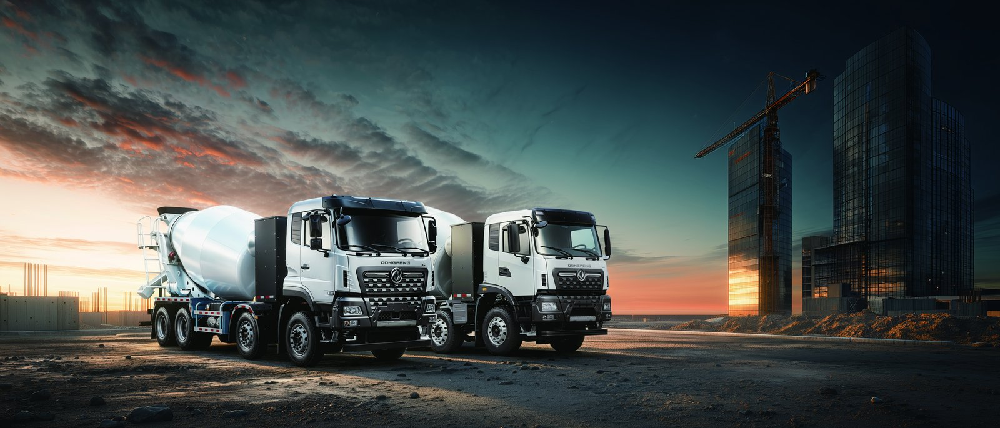

Baghdad is rebuilding its municipal services after years of disruption, and solid-waste collection is a visible priority for the Mayoralty of Baghdad. Modernizing that fleet means more than new trucks — it means trucks that run when the grid does not, that qualify for donor-funded tenders, and that clean the city without adding diesel smoke to already poor air. This article examines the Dongfeng KT1D electric sweeper for Iraq’s municipal-waste modernization, including solar depot charging and World Bank / UNDP procurement.
The Mayoralty of Baghdad manages collection across a sprawling, dense city where informal dumping and unreliable diesel fleets have left gaps in service. A modernized fleet is expected to be quieter, cleaner and more accountable — and increasingly it must be fundable through international donors. Electric sweepers and washers score well on exactly those criteria: zero tailpipe in residential districts, low noise for early-morning work, and a telemetry trail that donor reports require. The KT1D is a compactor-sweeper class unit purpose-built for this duty.
The KT1D combines road sweeping, high-pressure washing and a compaction hopper on a single electric chassis with a 180-220 kWh CATL LFP battery. The LvKong motor delivers 180-240 kW, with separate high-voltage drives for the brushes, vacuum and washer pump so the body works whether the truck moves or parks. Real-world range is 140-190 km per charge on a sweeping route — enough for a full district circuit. DC charging 20-80% takes 40-55 minutes, and the 8-year / 4,500-cycle warranty to 70% SOH covers daily municipal duty.
The sealed LFP pack tolerates Baghdad’s 45-50 °C summers with active thermal management, and the near-silent sweep mode lets the truck work before dawn without waking neighbourhoods.
The KT1D’s modular body lets one chassis serve several Baghdad duties — road sweeping, high-pressure washing and compacted refuse — so a municipality standardises its sanitation fleet on a single electric platform instead of mixing diesel sweepers, washers and collectors. That uniformity simplifies the solar depot, the spares hold and the driver training, and it gives the Mayoralty one telemetry feed across the whole service. For a city rebuilding after disruption, a single accountable electric fleet is easier to fund, easier to audit and easier to scale district by district than a patchwork of ageing diesel units. The KT1D is therefore the practical anchor of any Baghdad waste-modernisation programme, not merely a greener alternative to one truck type.
The reconstruction context shapes the whole business case. Years of disrupted service left parts of Baghdad with accumulated uncollected waste, and a modernized electric fleet is a visible symbol of restored municipal competence — which is precisely why donor programmes prioritise it. A KT1D deployment is usually bundled with driver training, a spares hold and a solar depot, so the municipality receives a working system rather than loose trucks. That bundled, accountable package is what World Bank and UNDP reviewers look for, and it is what lets Baghdad scale from a pilot district to citywide coverage without re-tendering every stage.
Baghdad’s grid can be intermittent, which is why the KT1D pairs naturally with a solar-and-battery depot. A modest rooftop PV array plus a storage buffer charges the sweepers during the day; the trucks draw from stored energy at night, so collection continues even when the mains drop. This is not a luxury — for a municipality it is resilience: the fleet is never hostage to a power cut. Donor programmes favour exactly this self-generated, low-emission design.
| Parameter | KT1D Electric Sweeper / Washer |
|---|---|
| Body | Sweeper + washer + compactor |
| Battery | 180-220 kWh CATL LFP |
| Motor | LvKong 180-240 kW |
| Route range | 140-190 km / shift |
| DC charge 20-80% | 40-55 min at 180 kW |
| Warranty | 8 yr / 4,500 cycles to 70% SOH |
| FOB price band | US$85,000-110,000 |
Iraq commercial diesel is about US$0.50-0.70 per litre; depot electricity (especially solar-backed) runs roughly US$0.06-0.12 per kWh. A diesel sweeper burns 0.38-0.50 L/km with heavy idling at each pass; at US$0.60/L that is US$0.23-0.30 per km. The KT1D draws 0.9-1.3 kWh/km; at US$0.09/kWh that is US$0.08-0.12 per km — roughly 60% lower. Maintenance savings add US$0.04-0.06 per km. On 100 km per night, 320 nights a year, the combined saving is US$8,000-13,000 per truck. With donor funding narrowing the purchase premium and solar cutting the energy bill toward zero, payback can fall inside 24-40 months — and the clean, quiet sweep improves service acceptance across Baghdad districts.
The water-saving washer option matters in a country where supply is strained. The KT1D’s high-pressure system uses a fraction of the volume a open-hose diesel unit consumes, and the electric pump modulates pressure to the surface rather than running flat-out. Municipalities report both cleaner streets and lower water draw — a combined environmental win that donor reports reward. As Baghdad extends service into districts long without regular collection, the KT1D’s quiet, low-water profile lets it work daytime as well as pre-dawn, raising daily coverage without adding diesel fleets the city cannot fuel reliably.
Shaanxi Fenghan Trading exports the KT1D worldwide with GCC-climate pack, sweeper-washer body options, solar-depot design support and telematics for donor reporting. The Iraq market page covers import and conformity. For the Mayoralty or its contractors we prepare the lifecycle-emission and energy statements that World Bank / UNDP tenders require, and size the solar depot to your fleet.
The donor-tender discipline is where most Baghdad EV projects succeed or stall, and we build the submission with the operator rather than handing over loose trucks. A World Bank or UNDP waste modernisation programme wants a quantified outcome — tonnes diverted, kWh per tonne, local emissions avoided, jobs trained — and the KT1D’s telematics supplies every figure directly. We bundle the solar depot design, the spares hold and the driver-training plan into the same package so the reviewer sees a complete, operable system. That completeness is what moves a Baghdad pilot from a single district to citywide collection, and it is why we lead with the lifecycle statement before the price. Contact the Mayoralty procurement team and we will prepare the evidence pack.
Grid variability is the operational reality we design around in Baghdad. Mains supply can dip for hours, and a diesel fleet shrugs that off while a plugged-in electric sweeper would stall — unless the depot carries its own buffer. Our standard Baghdad design pairs the KT1D charger with a rooftop PV array and a storage bank sized to one full sweep shift, so the trucks charge from stored energy and collection continues through an outage. On sunny days the PV covers most of the draw and the grid import falls toward zero, which is the figure the donor report highlights. The other reality is dust: Baghdad’s fine particulate loads the sweeper hopper fast, so we set a wash-down and filter routine into the telematics and stock brushes and seals locally. With those two details handled — solar-backed charging and a dust-service schedule — the KT1D runs a reliable daily circuit across the districts that need it most, and the municipality can show continuous service where diesel disruption once left streets uncollected. That reliability, more than the fuel saving, is what wins the next tranche of funding.
Ready to electrify your fleet? Contact Shaanxi Fenghan Trading — authorized Dongfeng EV truck exporter. WhatsApp: +86 153 1943 1311 | Email: sales@fenghan-trade.com | dongfengevtrucks.com
🌐 Our Network: Fenghan Trade (SAGMOTO/SHACMAN Truck Export) · SAGMOTO heavy duty diesel trucks